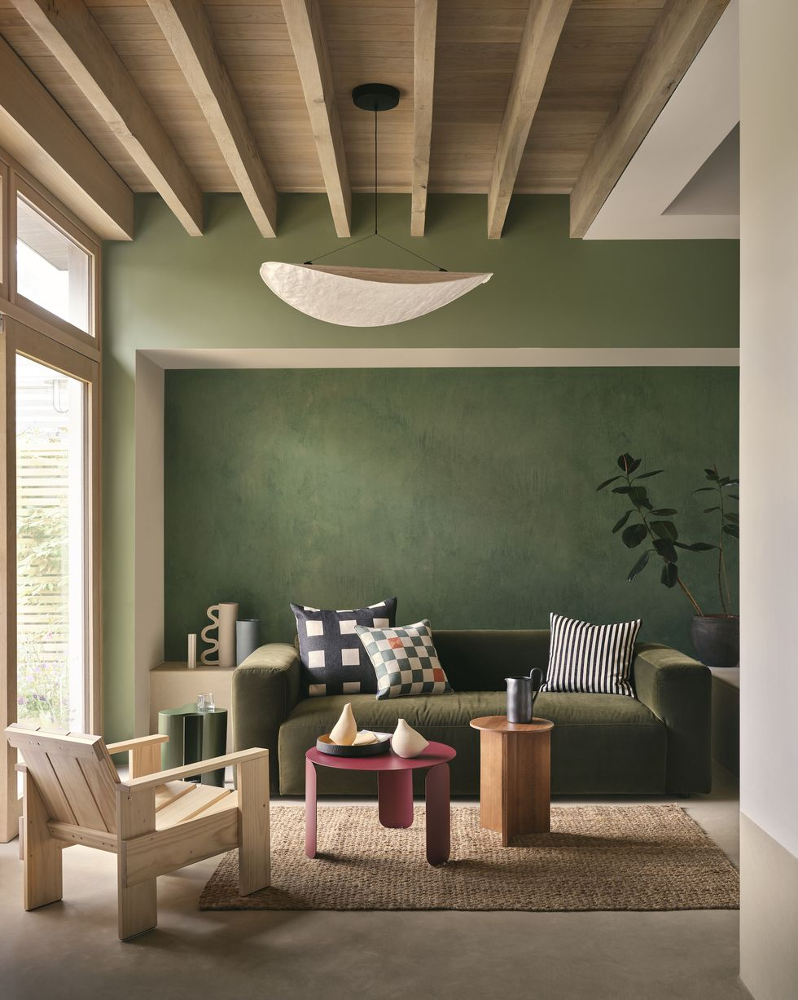
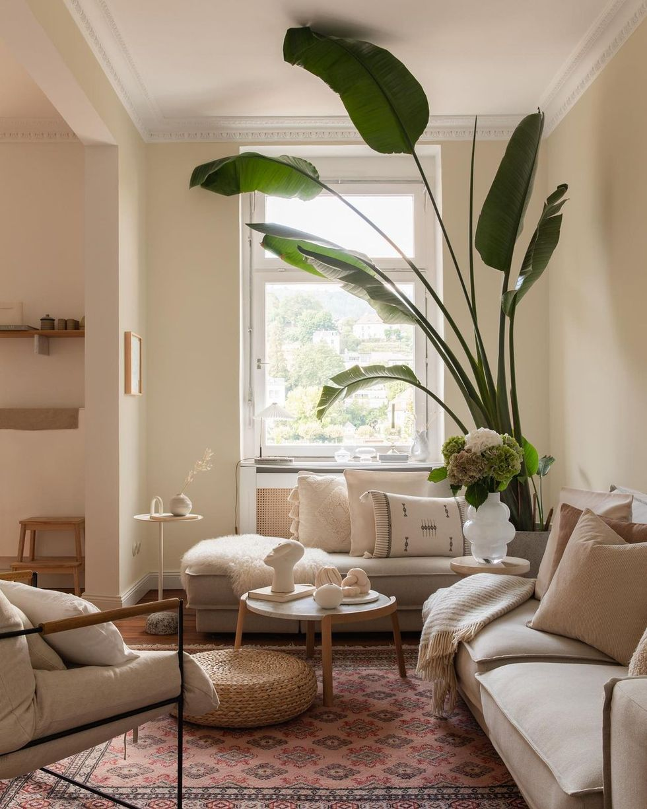
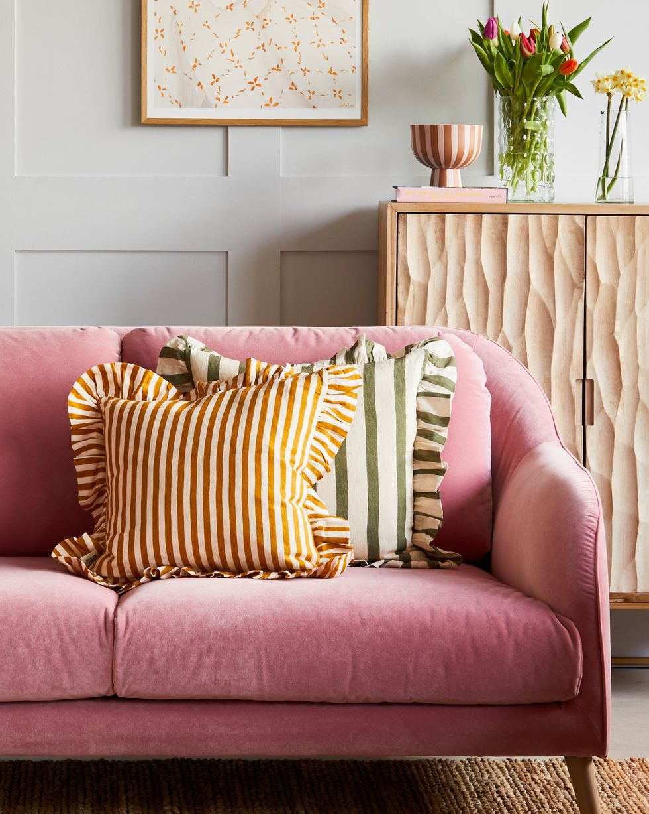
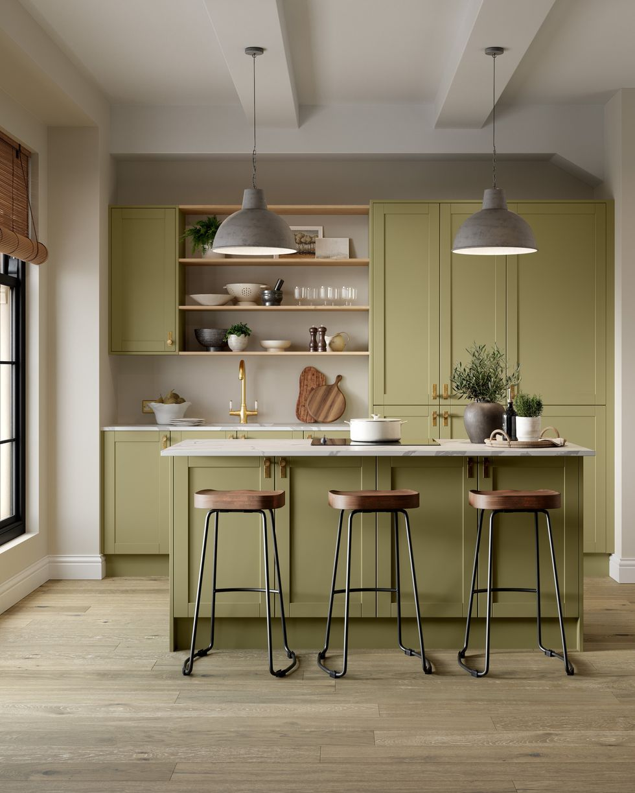
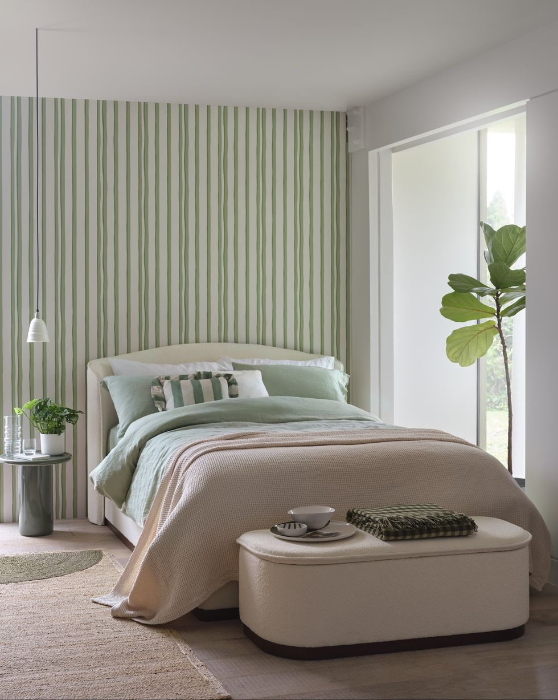

INSPO
Feel free to be inspired
Pieces with character

Inspiration colors
The new neutral tones

Inspiration colors
Vibrant

Inspiration colors
Kitchen in the wall

Inspiration colors
Fabric

Inspiration colors